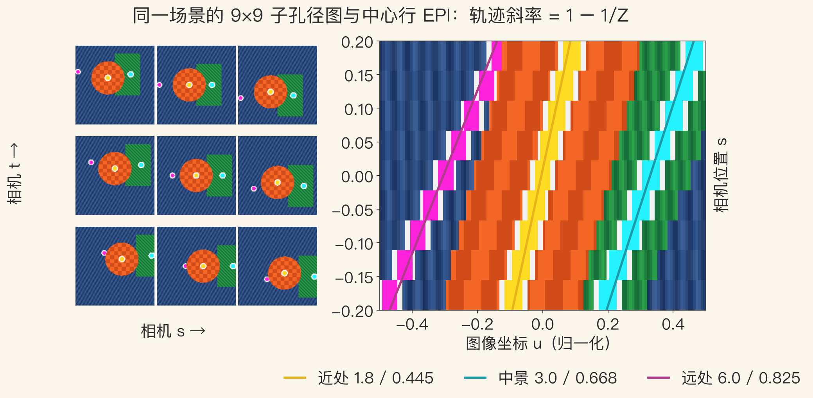
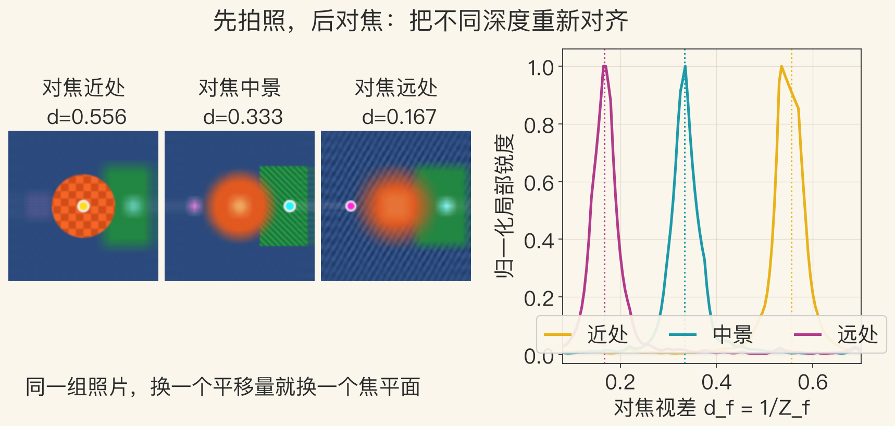
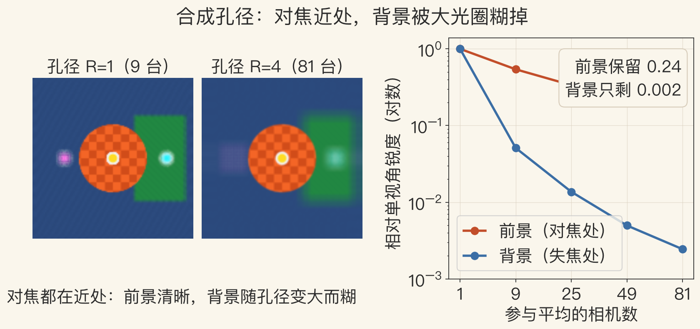

开场 · 光场是什么
拍完了，还能改对焦吗
普通相机每个像素只记亮度和颜色。
光场多记两个方向，信息多一大截。
先记录光线，再在电脑上重排。
本集用 9×9 合成相机阵列演示。
依据：原书第 875–883 页；本集实验
两种相机
普通相机：一个像素一束光
光场：记下光线的方向
合成实验，不是 Lytro 实拍
正课第一百二十二集
01 / 12
全光函数 · 5D 到 4D
从 5D 砍到 4D，砍哪一维
每个相机位置拍一张二维球面图。
三维位置加二维方向，就是 5D。
无烟无雾时，共线光线颜色相同。
去掉沿光线距离，5D 降到 4D。
依据：原书第 875–876 页
维度的账
5D：位置 3 + 方向 2
4D：光线穿过两个平面
砍掉的是“走多远”
正课第一百二十二集
02 / 12
两平面参数化
两块平面，给光线编号
光线穿过 st 平面的 (s,t)。
也穿过 uv 平面的 (u,v)。
四个数 (s,t,u,v) 定住一条光线。
有限光板生成有限视口内的视角。
依据：原书第 876–877 页
(s, t, u, v)
st：相机阵列所在平面；uv：每台相机的成像面；绕物体一圈要多个光板或立方体面
正课第一百二十二集
03 / 12
极线平面图 · EPI
把相机排成行，切出 EPI
固定 t，相机沿 s 移动，图像按 u 堆叠。
横切一刀，就是极线平面图 EPI。
同一深度的像素，排成一条直线。
近处轨迹平，远处轨迹陡。
依据：原书第 877 页
斜率与深度
轨迹斜率随深度变化
一条 EPI 切片就能测深
不用先做两幅图匹配
正课第一百二十二集
04 / 12
实验一 · EPI 斜率测深
看图：三条轨迹，三种深度
左：9×9 阵列里的 3×3 子孔径图。
右：中心行按 s 堆成的 EPI。
实测斜率 0.4453、0.6684、0.8247。
理论 1−1/Z，最大误差 0.0086。
依据：原书第 877 页；本集实验

9×9 子孔径图 + 中心行 EPI：三条轨迹对应近中远｜程序生成，未用教材或论文原图
正课第一百二十二集
05 / 12
Lumigraph · 深度补偿
知道表面在哪，重采样更准
Lumigraph 把表面点的三维位置纳入。
重采样按离面深度 z 改 u 参数。
再从相邻样本做线性混合。
前提是要有比较靠谱的深度或模型。
依据：原书第 877–878 页
两种插值
普通光场：四维网格找邻居
Lumigraph：先问打在哪个点
知道几何，少鬼影、少重影
正课第一百二十二集
06 / 12
实验二 · 重聚焦
看图：换平移量，换焦平面
左：焦平面放在近处、中景、远处。
右：对焦视差 0.08 到 0.70 的锐度曲线。
峰值 0.535、0.335、0.165。
真实视差 0.556、0.333、0.167，误差 0.021。
依据：本集实验

对焦近处 / 中景 / 远处 + 三条锐度曲线｜程序生成，未用教材或论文原图
正课第一百二十二集
07 / 12
合成孔径 · 大光圈
相机多了，等效光圈变大
混合更多邻近样本，模拟大光圈。
聚焦背景，前景糊成半透明。
能看见被挡住的东西。
被挡像素靠别的视角补进来。
依据：原书第 878–879 页
边界
不是消除遮挡，是把遮挡平均掉
适合看见大概
不适合精确测量
正课第一百二十二集
08 / 12
实验三 · 合成孔径
看图：背景被大光圈糊掉
左 9 台相机，右 81 台，都对焦近处。
背景锐度 0.1954 降到 0.0005。
前景保留 0.2391，前景/背景比 42.5。
前景也掉一点，因为平移本身会糊。
依据：本集实验

9 台 vs 81 台相机 + 前景/背景锐度曲线｜程序生成，未用教材或论文原图
正课第一百二十二集
09 / 12
采集与存储 · ULR
光线很多，冗余更多
轨道、相机阵列或手持都能采。
手持照片靠标定或 SfM 求位姿。
本集 9×9×128×128 有 1,327,104 条光线。
RGB 约 3.98 MB；一条 EPI 只有 1,152 像素。
依据：原书第 879–880 页；本集实验
ULR 五条准则
极线一致性、角度偏差
分辨率、连续性
沿光线一致性
正课第一百二十二集
10 / 12
14.3.2–14.3.4 · 更省方向
表面、全景、景深
完全漫反射，四维光场塌缩成纹理图。
表面光场存每个点的所有出射方向，叫 Lumisphere。
同心拼图把像素列对应到同心圆半径。
微透镜阵列平移叠加，就是 Lytro 类合成孔径。
依据：原书第 880–883 页
两个极端
完全漫反射：二维贴图
完全镜面：环境贴图
真实物体在两者之间
正课第一百二十二集
11 / 12
收束 · 下一集
4D、EPI、重聚焦
无烟无雾，5D 降到 4D。
两平面 (s,t,u,v) 给光线编号。
EPI 斜率等于 1−1/Z，斜率就是深度。
知道深度做 Lumigraph，不知道也能平移重聚焦。
依据：原书第 875–883 页
下一集
从光场回到照片本身
Photo Tourism：海量照片变可漫游场景
先拍照、后对焦，靠的是提前存方向
正课第一百二十二集
12 / 12